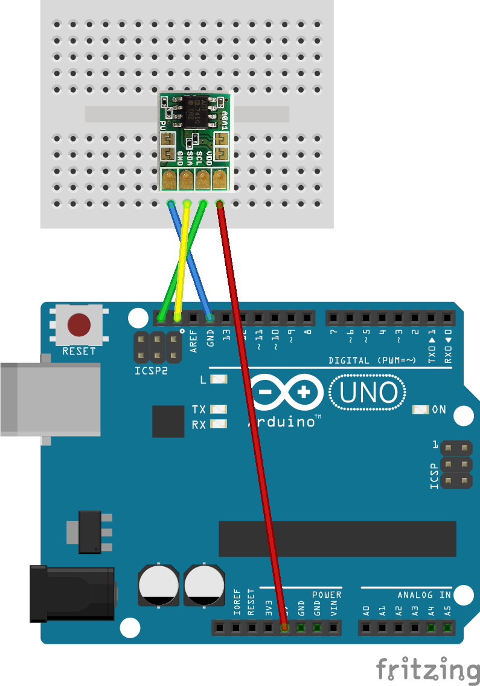
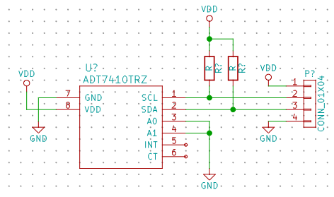

ADT74x0(温度センサー)
I2C(Wire)で使用できる温度センサーです．
回路
秋月のADT7410モジュールを利用する場合，プルアップ抵抗を有効にすれば最小限のパーツで利用できます．ArduinoはI2Cを内臓プルアップ抵抗でプルアップしてくれますが，イマイチエラーに陥りやすいので，プルアップ抵抗は必ずつけることをおすすめします． 
なお，チップ単体で利用する場合の回路はこんな感じです．Vcc，GND，SCL，SDAは秋月のモジュールを利用するときと同じように接続してください．

プログラム
ADT74x0はArduinoライブラリがありますので利用します．
#include <Wire.h>
#include <ADT74x0.h>
ADT74x0 temp_sensor;
void setup() {
Serial.begin(9600);
Wire.begin();
temp_sensor.begin();
}
void loop() {
Serial.print("Temp:");
Serial.println(temp_sensor.readTemperature());
delay(1000);
}